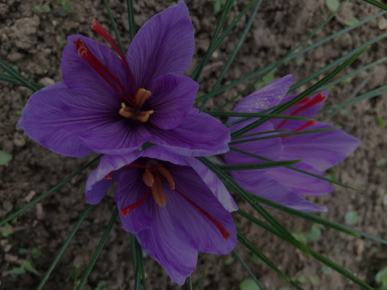

Épicez votre vie avec l'or rouge de la nature
Bienvenue dans l'univers fascinant du safran, une épice d'exception aux nuances éclatantes et aux arômes envoûtants. Notre site est une porte ouverte sur les mystères de cette précieuse fleur pourpre, source du légendaire "or rouge". Plongez dans notre exploration du safran, où vous découvrirez son histoire captivante, ses bienfaits pour la santé, et les secrets de sa culture artisanale. Que vous soyez amateur de cuisine raffinée, passionné par les trésors de la nature, ou simplement curieux, rejoignez-nous pour un voyage sensoriel au cœur du safran.
Découvrez l'origine du Safran
Le safran a des origines anciennes et son utilisation remonte à plusieurs millénaires.
Mésopotamie et Perse antique
Des écrits datant de plus de 3 500 ans mentionnent l'utilisation du safran à des fins médicinales et culinaires dans ces régions.Civilisations grecque et romains
Les Grecs et les Romains ont utilisé le safran à la fois comme épice pour la cuisine et dans la médecine. Il était également associé à des rituels religieux.Chine ancienne
Le safran a été introduit en Chine par voie terrestre à travers la Route de la Soie. Il a été adopté à la fois pour ses propriétés médicinales et son utilisation culinaire.

Antioxydant Naturel
Le safran est reconnu pour ses puissantes propriétés antioxydantes, aidant à neutraliser les radicaux libres dans le corps.Renforcement du Système Immunitaire
Les composés présents dans le safran peuvent contribuer au renforcement du système immunitaire, favorisant ainsi une meilleure résistance aux infections.Gestion du Stress et de l'Humeur
Des études suggèrent que le safran peut jouer un rôle dans la gestion du stress et de l'humeur, offrant un soutien naturel pour le bien-être émotionnel.Bienfaits Digestifs
Le safran a des propriétés bénéfiques pour la digestion, pouvant aider à soulager certains problèmes gastro-intestinaux.Potentiel Anti-inflammatoire
Certains composés du safran sont associés à des effets anti-inflammatoires, offrant un support potentiel dans la lutte contre l'inflammation.Soutien Cardiovasculaire
Des recherches suggèrent que le safran peut contribuer à la santé cardiovasculaire en favorisant la régulation de la pression artérielle et du cholestérol.Richesse en Nutriments
Outre ses bienfaits spécifiques, le safran est une source de nutriments essentiels, notamment des vitamines et des minéraux.
Les Secrets de l'Or Rouge pour une Santé Éclatante
Trésor de Taliwine
Découvrez l'Excellence Derrière Chaque Brin de Notre Safran PuriFié!
"Explorez la pureté exceptionnelle de notre safran Taliwine! Cultivé avec passion et récolté méticuleusement, notre safran offre une qualité inégalée. Plongez dans l'histoire de nos champs, les méthodes de culture soigneusement sélectionnées et la transformation experte qui font de notre safran une expérience unique en son genre. Savourez la richesse authentique de Taliwine à chaque brin de notre safran de qualité supérieure, garanti pour rehausser vos délices culinaires!"